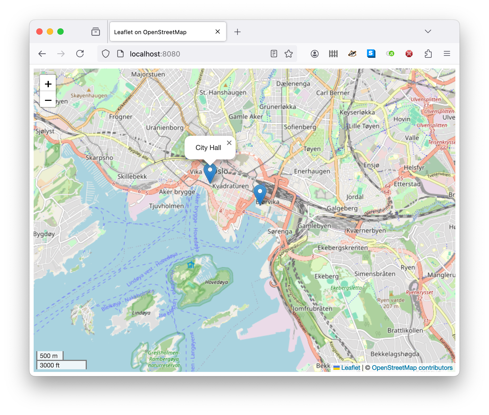

Geodata in ABS¶
The Model API of ABS lets us display information in various ways. This example shows how to display geo-annotated ABS data on a map. To display the map in a browser, we use OpenStreetmap via the Leaflet library.
The complete code for this example is at https://github.com/abstools/absexamples/tree/master/collaboratory/examples/gis-modeling/.
In OpenStreetmap, coordinates are expressed as a (lat, long) pair
of floating point numbers. We model map data as MapData(Float lat,
Float long, String description), which is then returned from the
Model API. The complete code of the ABS part is as follows:
module MapObjects;
data MapData = MapData(Float lat, Float long, String description);
interface OMap {
[HTTPCallable] Pair<Float, Float> getInitialCoordinates();
[HTTPCallable] List<MapData> getMapObjects();
}
class OMap implements OMap {
Pair<Float, Float> getInitialCoordinates() {
return Pair(59.90, 10.73);
}
List<MapData> getMapObjects() {
return list[MapData(59.91115, 10.7357, "City Hall"),
MapData(59.90758, 10.75197, "Opera House")];
}
}
{
[HTTPName: "map"] OMap m = new OMap();
}
Accessing and displaying coordinates¶
When the running model is accessed from a browser, the createMap
function in the model’s index.html
file is called. This function creates a map, sets its initial location
according to the getInitialCoordinates method (Lines 6-12), then
adds the objects returned by the getMapObjects method (Lines
14-17). Both of these ABS methods are called from JavaScript code in
createMap (Lines 2, 3):
function createMap() {
Promise.all([fetch("/call/map/getInitialCoordinates"),
fetch("/call/map/getMapObjects")])
.then((values) => values.map(p => p.json())).then((p) => Promise.all(p))
.then(([coords, objects]) => {
var mymap = L.map('mapid').setView([coords.result.fst, coords.result.snd], 13);
L.tileLayer('https://{s}.tile.openstreetmap.org/{z}/{x}/{y}.png', {
maxZoom: 19,
attribution: '© <a href="https://openstreetmap.org/copyright">OpenStreetMap contributors</a>'
}).addTo(mymap);
L.control.scale().addTo(mymap);
objects.result.forEach(item =>
L.marker([item.lat, item.long])
.addTo(mymap)
.bindPopup(item.description));
var popup = L.popup();
function onMapClick(e) {
popup.setLatLng(e.latlng)
.setContent("You clicked the map at " + e.latlng.toString())
.openOn(mymap);
}
mymap.on('click', onMapClick);
});
}
Running the example¶
Because the model includes a custom html page and support library, the
compiler needs to run with the --modelapi-index-file and
--modelapi-static-dir arguments. See the Makefile
for the commands to compile and run the example on the Erlang or Java
backend.
After starting the model, the map can be accessed at
http://localhost:8080.

A map of Oslo with two points of interest¶